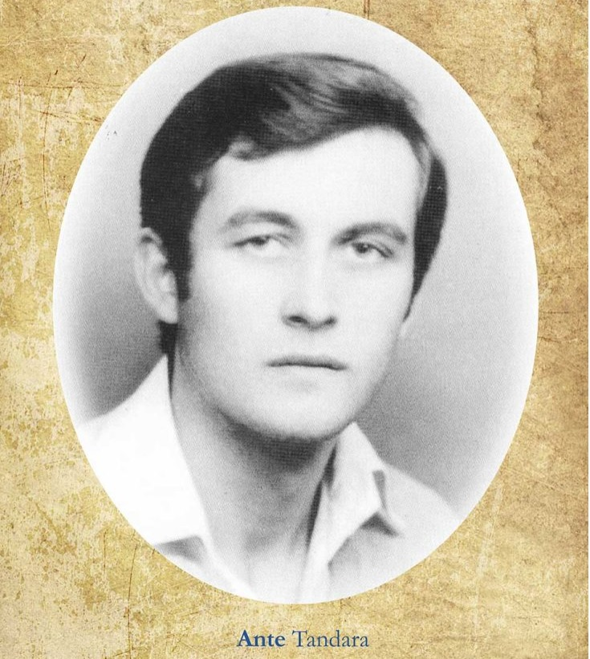

THE FOURTH BRANCH OF THE FIRST TANDARA FAMILY
4.0. Mate Tandara — son of Ivan(★ c. 1740. - ✝ N.G.)
Mate Tandara was the fourth son of Ivan Tandara. Mate and his wife, Filipa Kopač, had five children: a son, Ivan, and daughters Matija, Manda, Jaka and Cecilija. The male line continued exclusively through their son Ivan. Ivan married twice. In his first marriage to Pava Sičenica, he had a son, Ante, the only male heir of Mate’s line. In his second marriage to Jela Parlov, he had a daughter, Ruža. This branch is popularly known by the nickname Cesarovići.
An interesting oral tradition concerning the origin of this nickname has been preserved among the living members of this genealogical branch of the Tandara clan. According to the story, some of Mate’s descendants worked on the land for a family of the Lažeta clan. When members of the household and their neighbours asked them, “What was the food like at the Lažeta household?”, they replied: “Like at the emperor’s table!”
Whether the word they used was cesar or sesar remains unclear to this day. Although both forms can be found on older gravestones and in oral tradition, most descendants of this family branch are now known as Cesarovići.
Family member codes: 0.0 Ivan Tandara(★ N.G. - ✝ N.G.); 4.0-SP-1 Filipa Kopač(★ N.G. - ✝ N.G.); 4.1 Ivan — son of Mate(★ N.G. - ✝ 1870.); 4.0-K1 Matija — daughter of Mate(★ N.G. - ✝ N.G.); 4.0-K2 Manda — daughter of Mate(★ N.G. - ✝ N.G.); 4.0-K3 Jaka — daughter of Mate(★ N.G. - ✝ N.G.); 4.0-K4 Cecilija — daughter of Mate(★ N.G. - ✝ N.G.).
4.1. Ivan — son of Mate(★ N.G. - ✝ 1870.)
Ivan, son of Mate, married twice. He first married Pava Sičenica in 1817, and they had a son, Ante. In his second marriage to Jela Parlov, he had a daughter, Ruža (★ 1849).
Family member codes: 4.1-SP-1 Pava Sičenica(★ N.G. - ✝ N.G.); 4.1-SP-2 Jela Parlov(★ N.G. - ✝ N.G.); 4.1.1 Ante — son of Ivan(★ 1832. - ✝ N.G.); 4.1-K1 Ruža — daughter of Ivan(★ 1849. - ✝ N.G.).
4.1.1. Ante — son of Ivan(★ 1832. - ✝ N.G.)
Ante married Joza Pušić in 1853. They had sons Ivan, Jure (★ 1858), Marko (★ 1865) and Mate, and daughters Iva (★ 1862), Tomica (★ 1867 – ✝ 1869), Mara (★ 1870) and Jela (★ 1877). No records concerning Jure and Marko have been found apart from their birth records. They may have died young or moved elsewhere.
Family member codes: 4.1.1-SP-1 Joza Pušić(★ N.G. - ✝ N.G.); 4.1.1.1 Ivan — son of Ante(★ 1855. - ✝ 1928.); 4.1.1.2 Mate — son of Ante(★ 1873. - ✝ 1927.); 4.1.1-S1 Jure — son of Ante(★ 1858. - ✝ N.G.); 4.1.1-S2 Marko — son of Ante(★ 1865. - ✝ N.G.); 4.1.1-K1 Iva — daughter of Ante(★ 1862. - ✝ N.G.); 4.1.1-K2 Tomica — daughter of Ante(★ 1867. - ✝ 1869.); 4.1.1-K3 Mara — daughter of Ante(★ 1870. - ✝ N.G.); 4.1.1-K4 Jela — daughter of Ante(★ 1877. - ✝ N.G.).
4.1.1.1. Ivan — son of Ante(★ 1855. - ✝ 1928.)
He married Ruža Matišić, and they had sons Marijan (★ 1888), Jozo and Ivan, and daughters Anica (★ 1893 – ✝ 1920), Iva (★ 1895) and Jela (★ 1899). No records concerning Marijan have been found apart from his birth record. He may have died young or moved elsewhere.
Family member codes: 4.1.1.1-SP-1 Ruža Matišić(★ N.G. - ✝ N.G.); 4.1.1.1.1 Jozo — son of Ivan(★ 1890. - ✝ 1947.); 4.1.1.1.2 Ivan — son of Ivan(★ 1903. - ✝ 1965.); 4.1.1.1-S1 Marijan — son of Ivan(★ 1888. - ✝ N.G.); 4.1.1.1-K1 Anica — daughter of Ivan(★ 1893. - ✝ 1920.); 4.1.1.1-K2 Iva — daughter of Ivan(★ 1895. - ✝ N.G.); 4.1.1.1-K3 Jela — daughter of Ivan(★ 1899. - ✝ N.G.).
4.1.1.1.1. Jozo — son of Ivan(★ 1890. - ✝ 1947.)
Jozo, Ivan’s second son, married Iva Bilić. They had sons Marijan and Mirko (★ 1932 – ✝ 1936), who died as a young child, and daughters Joza (★ 1922) and Ana (★ 1926).
Family member codes: 4.1.1.1.1-SP-1 Iva Bilić(★ N.G. - ✝ N.G.); 4.1.1.1.1.1 Marijan — son of Jozo(★ 1929. - ✝ 1977.); 4.1.1.1.1-S1 Mirko — son of Jozo(★ 1932. - ✝ 1936.); 4.1.1.1.1-K1 Joza — daughter of Jozo(★ 1922. - ✝ N.G.); 4.1.1.1.1-K2 Ana — daughter of Jozo(★ 1926. - ✝ N.G.).
4.1.1.1.1.1. Marijan — son of Jozo(★ 1929. - ✝ 1977.)
Marijan was married and had descendants. Information about likely living family members is kept in the private archive.
Family member codes: 4.1.1.1.1.1-SP-1 Living descendant – the name is available only on the private website with a password.; 4.1.1.1.1.1.1 Living descendant – the name is available only on the private website with a password.; 4.1.1.1.1.1-K1 Living descendant – the name is available only on the private website with a password.; 4.1.1.1.1.1-K2 Living descendant – the name is available only on the private website with a password.; 4.1.1.1.1.1-K3 Living descendant – the name is available only on the private website with a password.; 4.1.1.1.1.1-K4 Living descendant – the name is available only on the private website with a password.; 4.1.1.1.1.1-K5 Living descendant – the name is available only on the private website with a password.; 4.1.1.1.1.1-K6 Living descendant – the name is available only on the private website with a password..
4.1.1.1.1.1.1. Living descendant – the name is available only on the private website with a password.
Information about this person is available only on the private website with a password.
Family member codes: 4.1.1.1.1.1.1-SP-1 Living descendant – the name is available only on the private website with a password.; 4.1.1.1.1.1.1.1 Living descendant – the name is available only on the private website with a password.; 4.1.1.1.1.1.1.2 Living descendant – the name is available only on the private website with a password.; 4.1.1.1.1.1.1.3 Living descendant – the name is available only on the private website with a password.; 4.1.1.1.1.1.1-K1 Living descendant – the name is available only on the private website with a password..
4.1.1.1.2. Ivan — son of Ivan(★ 1903. - ✝ 1965.)
Ivan married twice. He had descendants from his first marriage to Jaka Tavra; their son Stanko (★ 1938 – ✝ 1952) died at the age of fourteen. His second marriage to Ana Capia produced no children. Information about likely living family members is kept in the private archive.
Family member codes: 4.1.1.1.2-SP-1 Jaka Tavra(★ N.G. - ✝ N.G.); 4.1.1.1.2-SP-2 Ana Capia(★ N.G. - ✝ N.G.); 4.1.1.1.2.1 Living descendant – the name is available only on the private website with a password.; 4.1.1.1.2-S1 Stanko — son of Ivan(★ 1938. - ✝ 1952.).
4.1.1.1.2.1. Living descendant – the name is available only on the private website with a password.
Information about this person is available only on the private website with a password.
Family member codes: 4.1.1.1.2.1-SP-1 Living descendant – the name is available only on the private website with a password.; 4.1.1.1.2.1.1 Living descendant – the name is available only on the private website with a password.; 4.1.1.1.2.1-S1 Living descendant – the name is available only on the private website with a password.; 4.1.1.1.2.1-S2 Miroslav — son of Frane(★ 1959. - ✝ 1959.); 4.1.1.1.2.1-S3 Living descendant – the name is available only on the private website with a password.; 4.1.1.1.2.1-K1 Living descendant – the name is available only on the private website with a password.; 4.1.1.1.2.1-K2 Living descendant – the name is available only on the private website with a password.; 4.1.1.1.2.1-K3 Living descendant – the name is available only on the private website with a password.; 4.1.1.1.2.1-K4 Living descendant – the name is available only on the private website with a password..
4.1.1.1.2.1.1. Living descendant – the name is available only on the private website with a password.
Information about this person is available only on the private website with a password.
Family member codes: 4.1.1.1.2.1.1-SP-1 Living descendant – the name is available only on the private website with a password.; 4.1.1.1.2.1.1-K1 Living descendant – the name is available only on the private website with a password.; 4.1.1.1.2.1.1-K2 Living descendant – the name is available only on the private website with a password..
4.1.1.2. Mate — son of Ante(★ 1873. - ✝ 1927.)
He married Ruža Manenica. They had sons Ante (★ 1901 – ✝ 1901), Josip (★ 1905), Cvitan, another son also named Ante (★ 1908), and Nikola, and daughters Tomica (★ 1902) and Mara (★ 1910). No records concerning Josip have been found apart from his birth record. He may have died young or moved elsewhere.
Family member codes: 4.1.1.2-SP-1 Ruža Manenica(★ N.G. - ✝ N.G.); 4.1.1.2.1 Cvitan — son of Mate(★ 1908. - ✝ 1981.); 4.1.1.2.2 Ante — son of Mate(★ 1908. - ✝ N.G.); 4.1.1.2.3 Nikola — son of Mate(★ 1911. - ✝ 1980.); 4.1.1.2-S1 Ante — first son of Mate(★ 1901. - ✝ 1901.); 4.1.1.2-S2 Josip — son of Mate(★ 1905. - ✝ N.G.); 4.1.1.2-K1 Tomica — daughter of Mate(★ 1902. - ✝ N.G.); 4.1.1.2-K2 Mara — daughter of Mate(★ 1910. - ✝ N.G.).
4.1.1.2.1. Cvitan — son of Mate(★ 1908. - ✝ 1981.)
Cvitan, Mate’s third son, married Tomica Pavić. Their son Mate (★ 1932 – ✝ 1933) and daughter Ana (★ 1934 – ✝ 1935) died in early childhood. Cvitan’s line died out. Information about likely living family members is kept in the private archive.
Family member codes: 4.1.1.2.1-SP-1 Tomica Pavić(★ N.G. - ✝ N.G.); 4.1.1.2.1-S1 Mate — son of Cvitan(★ 1932. - ✝ 1933.); 4.1.1.2.1-S2 Living descendant – the name is available only on the private website with a password.; 4.1.1.2.1-K1 Lucija — daughter of Cvitan(★ 1930. - ✝ N.G.); 4.1.1.2.1-K2 Ana — daughter of Cvitan(★ 1934. - ✝ 1935.); 4.1.1.2.1-K3 Living descendant – the name is available only on the private website with a password.; 4.1.1.2.1-K4 Living descendant – the name is available only on the private website with a password.; 4.1.1.2.1-K5 Living descendant – the name is available only on the private website with a password.; 4.1.1.2.1-K6 Living descendant – the name is available only on the private website with a password..
4.1.1.2.2. Ante — son of Mate(★ 1908. - ✝ N.G.)
The historical record for this person remains publicly available. Information about likely living family members has been moved to the private archive.
Family member codes: 4.1.1.2.2-SP-1 Ana Pavić(★ N.G. - ✝ N.G.); 4.1.1.2.2.1 Marijan — son of Ante(★ 1934. - ✝ 1963.); 4.1.1.2.2.2 Living descendant – the name is available only on the private website with a password.; 4.1.1.2.2.3 Living descendant – the name is available only on the private website with a password.; 4.1.1.2.2.4 Living descendant – the name is available only on the private website with a password.; 4.1.1.2.2-S1 Dinko — son of Ante(★ 1937. - ✝ 1939.); 4.1.1.2.2-K1 Living descendant – the name is available only on the private website with a password.; 4.1.1.2.2-K2 Living descendant – the name is available only on the private website with a password.; 4.1.1.2.2-K3 Living descendant – the name is available only on the private website with a password..
4.1.1.2.2.1. Marijan — son of Ante(★ 1934. - ✝ 1963.)
Marijan was killed in Germany in 1963. Information about likely living family members has been moved to the private archive.
Family member codes: 4.1.1.2.2.1-SP-1 Living descendant – the name is available only on the private website with a password.; 4.1.1.2.2.1.1 Ante — son of Marijan(★ 1961. - ✝ 1991.); 4.1.1.2.2.1.2 Living descendant – the name is available only on the private website with a password.; 4.1.1.2.2.1-K1 Living descendant – the name is available only on the private website with a password..
4.1.1.2.2.1.1. Ante — son of Marijan(★ 1961. - ✝ 1991.)
In the early 1990s, he joined the defence of Croatia against the aggression of the former Yugoslav People’s Army and Serbian paramilitary forces. He served in the Croatian War of Independence from August 1991 as a member of the 105th Brigade of the Croatian Army. In September of that year, Ante and nineteen other Croatian defenders, mostly from Bjelovar, were captured in Kusonje near Pakrac, tortured and killed. Their remains were exhumed from the Rakov Potok mass grave in January 1992. Information about likely living family members has been moved to the private archive.
Ante served in the Croatian War of Independence from August 1991 as a member of the 105th Brigade of the Croatian Army. In September of the same year, Ante and nineteen other Croatian defenders, most of them from Bjelovar, were captured in Kusonje near Pakrac, tortured and brutally executed. Their remains were exhumed from the Rakov Potok mass grave in January 1992.

Family member codes: 4.1.1.2.2.1.1-SP-1 Living descendant – the name is available only on the private website with a password.; 4.1.1.2.2.1.1.1 Living descendant – the name is available only on the private website with a password.; 4.1.1.2.2.1.1.2 Living descendant – the name is available only on the private website with a password..
4.1.1.2.2.1.2. Living descendant – the name is available only on the private website with a password.
Information about this person is available only on the private website with a password.
Family member codes: 4.1.1.2.2.1.2-SP-1 Living descendant – the name is available only on the private website with a password.; 4.1.1.2.2.1.2.1 Living descendant – the name is available only on the private website with a password.; 4.1.1.2.2.1.2.2 Living descendant – the name is available only on the private website with a password..
4.1.1.2.2.2. Living descendant – the name is available only on the private website with a password.
Information about this person is available only on the private website with a password.
Family member codes: 4.1.1.2.2.2-SP-1 Living descendant – the name is available only on the private website with a password.; 4.1.1.2.2.2.1 Living descendant – the name is available only on the private website with a password.; 4.1.1.2.2.2-S1 Living descendant – the name is available only on the private website with a password..
4.1.1.2.2.2.1. Living descendant – the name is available only on the private website with a password.
Information about this person is available only on the private website with a password.
Family member codes: 4.1.1.2.2.2.1-SP-1 Living descendant – the name is available only on the private website with a password.; 4.1.1.2.2.2.1.1 Living descendant – the name is available only on the private website with a password.; 4.1.1.2.2.2.1-K1 Living descendant – the name is available only on the private website with a password..
4.1.1.2.2.3. Living descendant – the name is available only on the private website with a password.
Information about this person is available only on the private website with a password.
Family member codes: 4.1.1.2.2.3-SP-1 Living descendant – the name is available only on the private website with a password.; 4.1.1.2.2.3.1 Living descendant – the name is available only on the private website with a password.; 4.1.1.2.2.3-K1 Living descendant – the name is available only on the private website with a password..
4.1.1.2.2.3.1. Living descendant – the name is available only on the private website with a password.
Information about this person is available only on the private website with a password.
Family member codes: 4.1.1.2.2.3.1-SP-1 Living descendant – the name is available only on the private website with a password.; 4.1.1.2.2.3.1.1 Living descendant – the name is available only on the private website with a password.; 4.1.1.2.2.3.1.2 Living descendant – the name is available only on the private website with a password..
4.1.1.2.2.4. Living descendant – the name is available only on the private website with a password.
Information about this person is available only on the private website with a password.
Family member codes: 4.1.1.2.2.4-SP-1 Living descendant – the name is available only on the private website with a password.; 4.1.1.2.2.4.1 Living descendant – the name is available only on the private website with a password.; 4.1.1.2.2.4-K1 Living descendant – the name is available only on the private website with a password..
4.1.1.2.2.4.1. Living descendant – the name is available only on the private website with a password.
Information about this person is available only on the private website with a password.
Family member codes: 4.1.1.2.2.4.1-SP-1 Living descendant – the name is available only on the private website with a password.; code pending Child – details pending(★ N.G. - ✝ N.G.); code pending Child – details pending(★ N.G. - ✝ N.G.); code pending Child – details pending(★ N.G. - ✝ N.G.); code pending Child – details pending(★ N.G. - ✝ N.G.); code pending Child – details pending(★ N.G. - ✝ N.G.); code pending Child – details pending(★ N.G. - ✝ N.G.).
4.1.1.2.3. Nikola — son of Mate(★ 1911. - ✝ 1980.)
Nikola married Mara Brnas. Their son Vinko lived from 1947 to 2010. Information about likely living family members is kept in the private archive.
Family member codes: 4.1.1.2.3-SP-1 Mara Brnas(★ N.G. - ✝ N.G.); 4.1.1.2.3.1 Vinko — son of Nikola(★ 1947. - ✝ 2010.); 4.1.1.2.3-S1 Living descendant – the name is available only on the private website with a password.; 4.1.1.2.3-K1 Living descendant – the name is available only on the private website with a password.; 4.1.1.2.3-K2 Living descendant – the name is available only on the private website with a password.; 4.1.1.2.3-K3 Living descendant – the name is available only on the private website with a password..
4.1.1.2.3.1. Vinko — son of Nikola(★ 1947. - ✝ 2010.)
Vinko, son of Nikola, lived from 1947 to 2010. He married and had descendants. Information about likely living family members is kept in the private archive.
Family member codes: 4.1.1.2.3.1-SP-1 Living descendant – the name is available only on the private website with a password.; 4.1.1.2.3.1.1 Living descendant – the name is available only on the private website with a password..
Codes for protected family members remain visible; their names and private information are available only on the private website with a password.
Interactive diagram of the Mate branch
Open the interactive family-tree diagram for this family branch.
Note
The complete family tree of this branch is available in the interactive diagram on the right of the Digital Archive of the Tandara Family home page.
On the home page, select the clickable box named “Mate branch”. Clicking it opens the corresponding part of the family tree with this branch’s descendants.